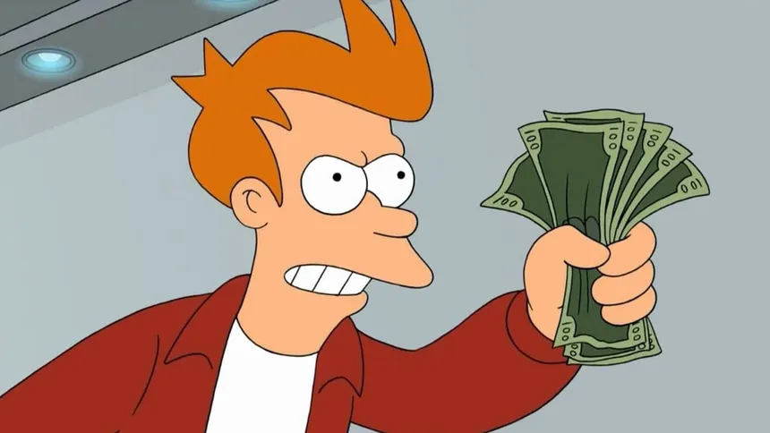

Futurama é ambientada na cidade de Nova Nova York na virada do século XXXI, em uma época repleta de maravilhas tecnológicas. O local foi construído sobre as ruínas da atual Nova York, chamada na série de "Velha Nova York". Muitos dos dispositivos e estruturas são similares ao estilo Googie. Aquecimento global, burocracia inflexível e abuso de substâncias químicas são alguns dos temas sujeitos a uma exageração futurista, em um mundo onde tais problemas tornaram-se não só mais extremos como também mais comuns. Assim como Nova York tornou-se uma versão extrema de si mesma no futuro, outros locais da Terra ganharam o mesmo tratamento, como por exemplo Los Angeles, retratada como uma terra apocalíptica devastada e tomada pela poluição. Futurama é ambientada na cidade de Nova Nova York na virada do século XXXI, em uma época repleta de maravilhas tecnológicas. O local foi construído sobre as ruínas da atual Nova York, chamada na série de "Velha Nova York". Muitos dos dispositivos e estruturas são similares ao estilo Googie. Aquecimento global, burocracia inflexível e abuso de substâncias químicas são alguns dos temas sujeitos a uma exageração futurista, em um mundo onde tais problemas tornaram-se não só mais extremos como também mais comuns. Assim como Nova York tornou-se uma versão extrema de si mesma no futuro, outros locais da Terra ganharam o mesmo tratamento, como por exemplo Los Angeles, retratada como uma terra apocalíptica devastada e tomada pela poluição.
Numerosos avanços tecnológicos foram alcançados entre a época atual e o século XXXI. A habilidade de manter cabeças vivas conservadas em jarros foi inventada por Ron Popeil, resultando na presença de diversas figuras históricas e celebridades atuais na série, incluindo o próprio Groening. Este foi o dispositivo encontrado pelos roteiristas para encaixar e satirizar temas atuais no programa mas, curiosamente, muitas das cabeças preservadas são de pessoas que já haviam morrido quando do advento daquela tecnologia; um dos exemplos mais proeminentes é a presença constante de Richard Nixon, morto em 1994. A internet, apesar de totalmente imersiva, englobando todos os sentidos—e apresentando inclusive seu próprio mundo virtual—é lenta e consiste principalmente em pornografia, propagandas pop-up, e salas de bate-papo "obscenas". A televisão continua sendo um dos principais meios de entretenimento. É comum a presença de robôs autoconscientes, sendo eles e seus sistemas movidos a etanol a principal causa do aquecimento global. A roda tornou-se obsoleta (apenas Fry parece reconhecer seu design), tendo sido substituída por carros voadores e uma imensa rede de tubos pneumáticos transparentes de transporte.
Em termos de meio-ambiente, animais comuns ainda existem, apesar de conviverem agora em conjunto com espécies mutantes, híbridas e extraterrenas. As corujas são frequentemente mostradas como substitutas dos ratos como peste doméstica, embora os ratos ainda existam e ajam como pombos, enquanto os pombos também continuam a subsistir. Pinheiros, anchovas e poodles entraram em extinção há 800 anos. A Terra ainda sofre os efeitos provocados pelos gases do efeito estufa, embora em um determinado episódio seja mostrado que isto foi anulado por um inverno nuclear. Em outro episódio, os efeitos do aquecimento global são de alguma forma superados com o lançamento de um cubo de gelo gigantesco no oceano, e posteriormente ao afastar a Terra do Sol.
